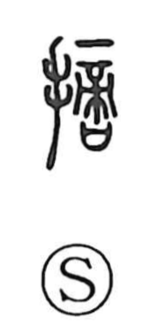

摘

Kun: tsumu, tsumamu | On: teki
to pick ・ to pluck ・ to take ・ to select ・ to choose ・ to point out ・ to indicate
Explanation
Shirakawa reads 摘 as a phono-semantic compound: the hand radical on the left signals a manual action, while the right-side phonetic from the 商/啇 series gives the on-yomi teki. He explains 商 as a graph combining 帝, the supreme deity, with a vessel-like element that represents a sacred receptacle for written prayers, thus denoting a person of rank permitted to worship the high god; this graph also stands as the ancestor of 嫡. For the sense, he invokes 蔕/蒂, the spot on a blossom that becomes fruit or seed: 摘 depicts plucking that very point with the hand. Hence the ancient gloss “to take fruit from a fruit tree,” later broadening to “pick, pluck, take,” “pick out, select,” and, in compounds like 指摘, “to point out, indicate.”